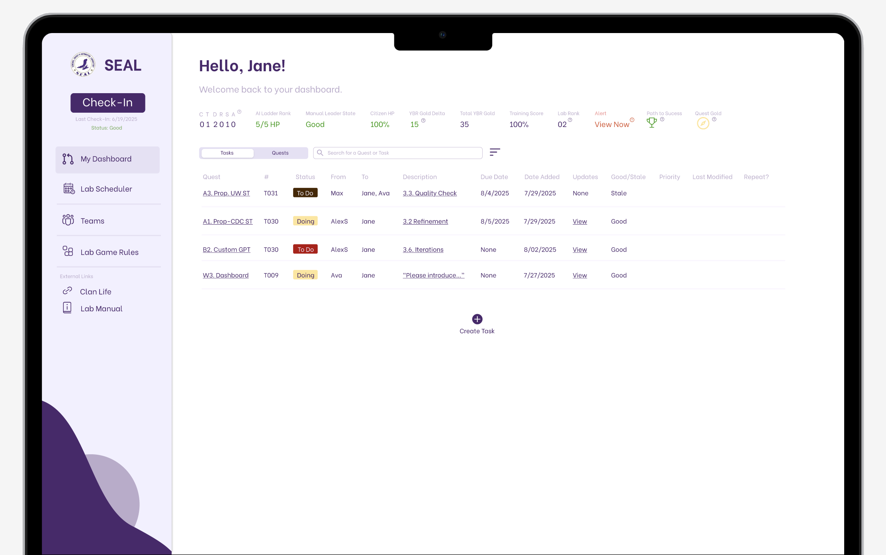
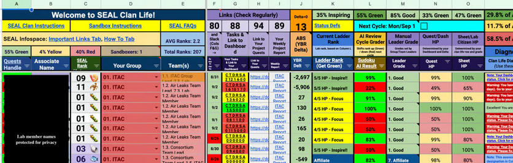
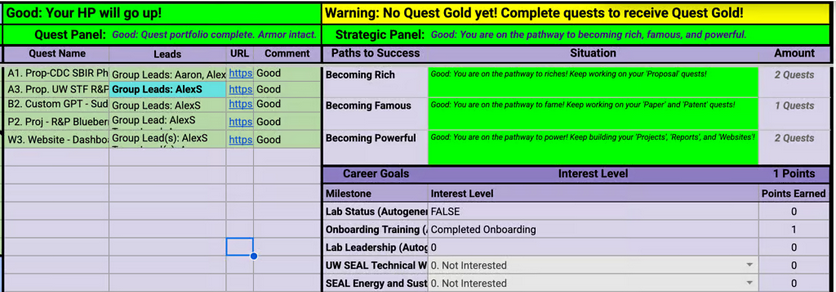
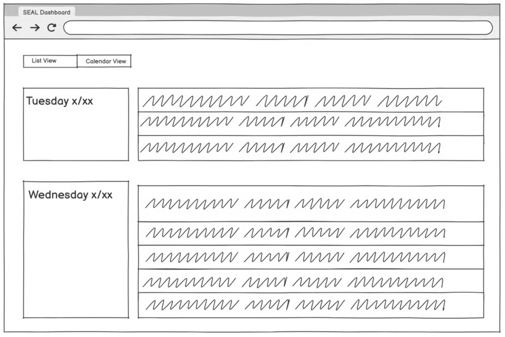
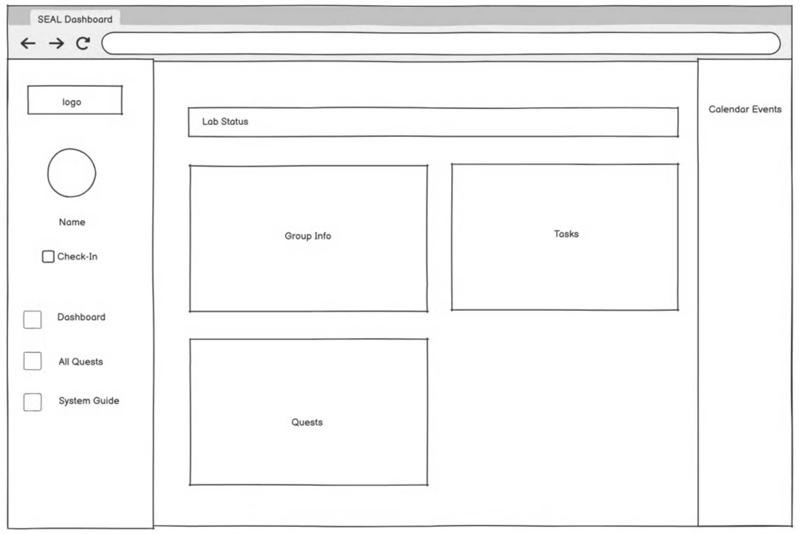
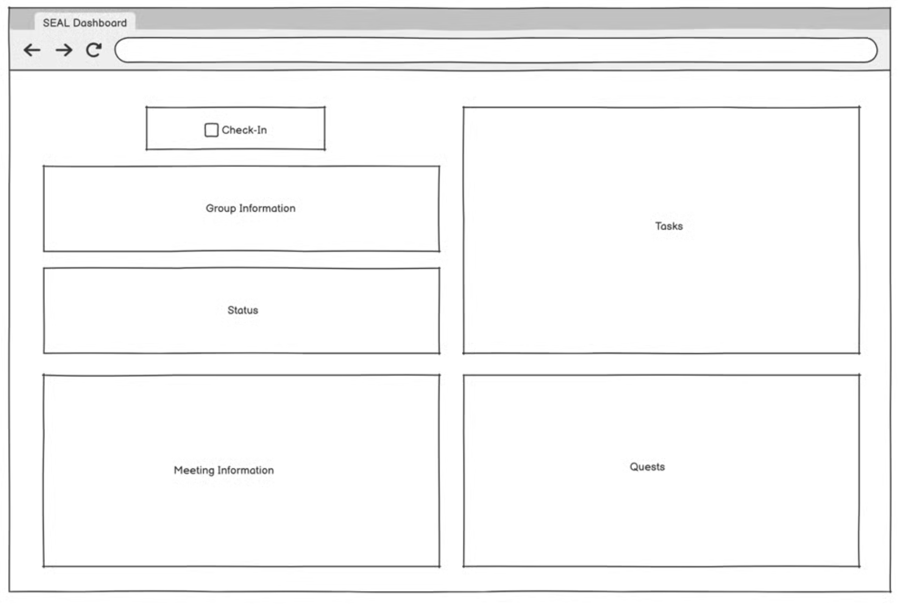
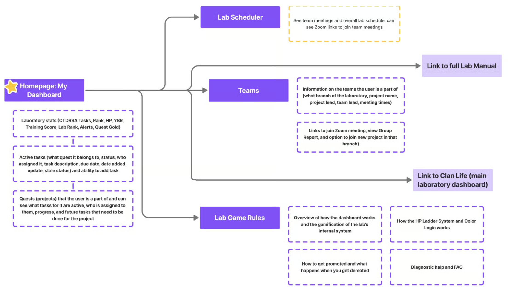
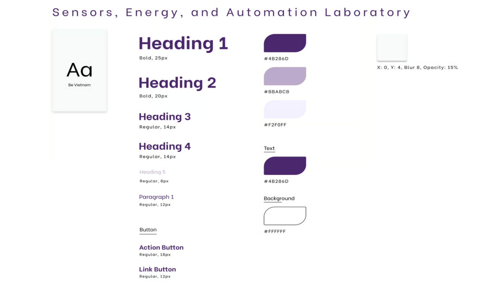

SEAL
I was chosen by the University of Washington's Sensors, Energy & Automation Laboratory to redesign the internal dashboard its 300+ engineers rely on, consolidating a fragmented, multi-spreadsheet system into one intuitive interface. I owned the project end-to-end, reporting to the web design team lead and running usability testing on every iteration.

How might we create an intuitive single-interface system that improves workflow efficiency and user satisfaction?
Productivity and project development in the lab were slower than expected, and members reported real difficulty navigating the internal dashboard, a multi-sheet process that created confusion and slowed everyone down.
New members had low retention, frustrated by the fragmented system. Experienced members struggled to give guidance outside their own habits when it came to task organization, finding new projects, scheduling meetings, seeing team information, and resource management.


Critical navigation and workflow inefficiencies
hindered productivity.
I conducted five in-depth interviews and extensive usability testing, which surfaced four significant pain points in the existing dashboard, each one measurably eroding daily productivity and satisfaction.
Multi-sheet navigation cost productivity
Users spent 30+ seconds on simple tasks like locating team information, lost to unclear naming conventions and a fragmented spreadsheet system.
43% task failure rate for simple workflows
To find project info and understand lab requirements, users built workarounds instead of using the existing interface.
Low baseline satisfaction (3/10)
Users described the navigation as having "no system," especially punishing for newer lab members.
Cognitive overload
Juggling multiple open spreadsheets and constant switching disrupted natural workflow patterns and decreased efficiency.
Optimizing information architecture through consistent user feedback.
I deliberately tested in the open, bringing wireframes back to lab members after every round so the structure was shaped by real workflows, not my assumptions about them.
Iteration 1 — one dashboard, not many sheets



I wireframed a comprehensive dashboard that would eliminate the need to move between spreadsheets, exploring information hierarchies and layouts that prioritized the most frequently accessed functions — lab status, groups, scheduling, and quests — based on the team lead's priorities.
Iteration 2 — clarity over decoration
After user feedback, I deprioritized a user profile feature (it wasn't part of an actual workflow). Certain features needed to be clearer, and more information had to be visible at first glance to accommodate the complexity of a member's role, including clear communication around performance decisions.
The resulting information architecture

A purple-led system, referenced throughout.
I built a style guide I returned to across the entire process. As the University of Washington's color is purple, I made it the backbone of the system, carried through components, states, and typography for a consistent, on-brand interface.

A single consolidated dashboard, organized around real workflows.
New information architecture for the core dashboard sections, designed to optimize productivity and answer each pain point directly. Usability testing on the final solution confirmed the original issues were resolved (confusion periods that had slowed lab operations were eliminated).
Critical information prioritized
The user's key info sits in a horizontal band at the top, current tasks and their details are immediately legible, and everything else lives in the side nav.
Clear project timeline
A "Quests" tab tracks project progression (the projects a member is part of, the full steps to complete each one, and who's working on them).
Accessible calendar
Modeled after Google Calendar, members can see exactly when specific teams meet and join their meetings on time.
Easily accessible team info
Members can quickly find their team leaders to contact in an emergency, and join new teams and team projects.
"Get Green" lab summary
The lab runs on a gamified system, so everything about staying in the optimal green zone is compiled in one place, with search.
The real-life effect of thoughtful design within real-world constraints.
This internship was an incredibly rewarding experience that challenged me for the first time to apply my skills and knowledge to solve organizational problems. Seeing a prestigious lab be held back by bad digital experience made seeing the positive impact that my design had on the lab extremely rewarding and helped me expand my definition of what good design truly meant. I went into the project rather ambitious as to how aesthetic I could make it compared to the mess of the original Excel sheet and quickly had to learn how to balance my ambitions with practical implementation realities about how the lab actually operates rather than how I initially assumed it would/should work.
In the end, the most satisfying aspect wasn't just seeing the 73% improvement in task completion times or user satisfaction scores rise from 3 to 7.5, but rather it was witnessing previously confusing workflows be navigated with ease during testing, allowing users to focus on their task at hand instead of fighting with the interface. This project reinforced my passion for UX design while teaching me valuable lessons about stakeholder collaboration, iterative usability testing (huge fan of A/B testing now!), and the importance of designing within real-world constraints. As I head into my final year at Parsons, I'm excited to carry forward these insights about how thoughtful design can genuinely improve people's daily work experiences and organizational efficiency.
Diana was genuinely a godsend and revolutionized the results of the project. She transformed our previous dashboard into one that is accessible, beautiful, and functional, and tested thoroughly with lab members on both the current and updated designs, revising her wireframes from the feedback she received.
Diana breathed life into our new dashboard and was truly a pleasure to work with this summer.